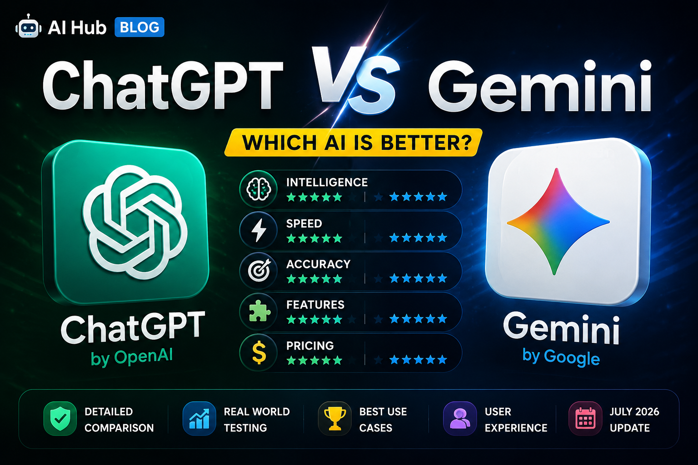

📅 Published: July 2026
⏱️ Reading Time: 5 Minutes
Artificial Intelligence is becoming more powerful every year. Two of the biggest AI chatbots today are ChatGPT by OpenAI and Gemini by Google. Let's compare them.
ChatGPT is excellent for writing, coding, learning, problem solving and creative content. It is widely used by students, developers and content creators.
Gemini is Google's AI assistant. It works well with Google Search, Gmail, Docs and other Google services. It is great for productivity and research.
Both AI models are fast, but the speed depends on the task and internet connection.
If you want better writing, coding and creative ideas, ChatGPT is an excellent choice. If you use Google services every day, Gemini offers better integration.
Both AI tools are powerful. The best choice depends on your needs. Many users even use both ChatGPT and Gemini together for maximum productivity.
⬅ Back to Blog